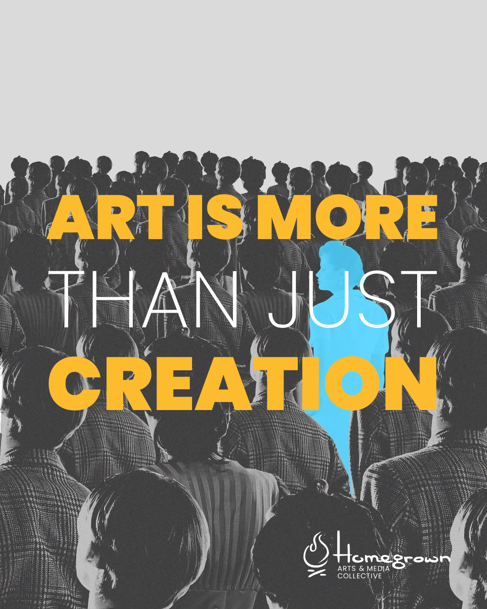

01 / NONPROFIT & CREATIVE COMMUNITY
Homegrown Arts & Media
A creative community first. An institution second.

Read the project story
The challenge
Homegrown is an Alberta nonprofit creating opportunities for emerging creatives and storytellers. Its programs, events and impact needed a more cohesive presence across digital channels, beyond individual marketing assets.
My role
Brand strategy, design, digital marketing, campaign development, content strategy and web direction.
The decision
Treat Homegrown as a creative community first and an institution second. Warmer language, human stories and a shared visual direction put Alberta creatives at the centre of the communications.
What that became
Campaign strategy, social creative, program launches, event promotion, sponsorship and fundraising materials, website direction and reporting—including communications for the Short Film Showcase and SPARKS mentorship programming.
What changed
A more unified way to present Homegrown. Individual programs increasingly sit within one recognizable brand and a shared narrative about sustainable opportunities for Alberta creatives.